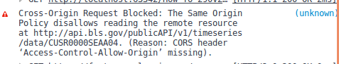

Bureau of Labor Services API Tutorial
Oregon State CS290
Introduction
The Bureau of Labor Statistics (BLS) was created in 1884 by the United States Federal Government to further understanding of underlying components of our labor system.
To further this aim, the bureau of the labor statistics records statistics on the employment, wages, worker injuries, consumer price index, and many other vital statistics.
The BLS’s provides electronic access to this records through either a browser based querying system or an API.
This website gives a thorough explanation of accessing these records through javascript based API calls.
APIs
An API is an acronym for application program interface.
APIs provide a way to communicate between computer programs and
as such APIs serve as a set of building blocks for implementing software and applications.
API access
The BLS has to API versions 1.0 and version 2.0. The API version 1.0 does not require registration and has a lower limit for the number of requests.
| |
Version 1.0 |
Version 2.0 |
| Daily Limit |
25 |
500 |
| Series per Request |
25 |
50 |
| Years per Request |
10 |
20 |
To register for version 2.0, please go to this page. After registrating your email address, you will be sent an email which contains
your API key. Please remember to validate your email address clicking the link contained in the email.
Please note that API Key has been modified.
SeriesIDs
A series id is sent as an identifier for the database query. Every series code represents a different database query. The basic structure of the codes varies between datasets. More information
please visit BLS series ids . Though this page gives a basic overview of many different series ids available, it still is missing many key ids.
To find more specific information select, you can use the one - screen java app (if your browser has java enabled) or the multiscreen app to form your queries. The database will be queried at
the end of the search and the series id displayed. This is a great way to figure out how the individual numbers vary based on criteria. The API is also valuable to return JSON formatted data.
Single Series API requests
For requests without authentication and for a single series, the process to retrieve data is very straight forward. You attach the Series Id to the a BLS url using a Get request this returns
a JSON object, the contents of which we will talk more about in future sections
series = 'CUSR0000SEAA04';
req.open('GET','http://api.bls.gov/publicAPI/v1/timeseries/data/' + series);
req.send();
jsObject = JSON.parse(req.responseText)
Since version 2 requires an registration key to monitor requests the code is slightly different for registered users. Note the slight change in the URL from v1 to v2.
series = 'CUSR0000SEAA04';
/* Slight Change in URL formatting */
req.open('GET','http://api.bls.gov/publicAPI/v2/timeseries/data/' + series);
req.send();
jsObject = JSON.parse(req.responseText)
Cross Content
Due to security and private concerns, the BLS blocks an api request from another domain in the browser. When you run the above example code in firefox,
you will receive an error message mentioning "Access-Control-Allow-Origin" (ACAO). This is a security feature that keeps allows a website to dictate who has access to their
data. The website can choose to let any websitely freely access its content by setting the ACAO equal to *. Unfortunately, the BLS limits this interactions. There are several
work arounds to this issue, but these are out of the scope of this tutorial for more information please refer to
Mozilla Developer CORS .
You will receive this message. (You can also reload the page with the developer tab open to see more detail)

This plugin may provide a potential workaround Chrome Plugin
Requesting Multiple Series
The key changes between requesting one series and multiple series is the request now becomes a POST request where the body of the request is JSON which looks like this
JSON
{"seriesid":["CUSR0000SEAA04", "LEU0254555900"]}
We now need to specify what sort of data we are sending in the body of POST request, so we sent Content-Type to application/json. I'm now initializing a
javascript object to send in the request. This allows us to easily modify the data that we are sending especially as the requests get more complicated.
JSON
req = new XMLHttpRequest();
series = {seriesid: ['CUSR0000SEAA04', 'LUU0202891000']};
bodyJSON = JSON.stringify(series);
req.open('POST','http://api.bls.gov/publicAPI/v1/timeseries/data/');
req.setRequestHeader('Content-Type', 'application/json');
req.send(bodyJSON);
jsObject = JSON.parse(req.responseText);
You are allowed up to 25 requests for v1 and 50 requests for v2 (again v2 in the url). The documentation is conflicting on whether or not to
send a registration key with v2 in this situation. Many versions of the example code do not send a registration key
with the request. However, I found one code sample that does send the api key and when I tested this it was a successful api call.
We also have the option of using x-www-form-urlencoded to make multi-series requests. The formatting on this is harder to read, so I'd discourage its use.
x-www-form-urlencoded
req = new XMLHttpRequest();
series ='seriesid=LUU0202891000,OEUN000000056' + '&'
'registrationkey=1eccaa39bf3c407db057ec5c43520723' //registrationkey
req.open('POST','http://api.bls.gov/publicAPI/v2/timeseries/data/');
req.setRequestHeader('Content-Type', 'application/x-www-form-urlencoded');
req.send(series);
jsObject = JSON.parse(req.responseText);
Requesting Multiple Series with Multiple Parameters
We have the ability to limit our queries by changing certain parameters. This documentation on these parameters is sparse
and this list is almost certainly incomplete
- registrationkey - parameters that passes our API key for version two requests
- startyear - specifies the beginning of the series
- endyear the last year of the series
- catalog series descriptions for a limit number of series
- annualaverage returns the data's yearly average
- calculations returns net change and percent changes in the data
Here's an example in JSON
JSON
req = new XMLHttpRequest();
series = {seriesid: ['CUSR0000SEAA04', 'LUU0202891000'],
registrationkey: '1eccaa39bf3c407db057ec5c43520723',
catalog:'true',
startyear:'2010',
endyear:'2014',
calculations: 'true'
annualaverage: 'true' };
bodyJSON = JSON.stringify(series);
req.open('POST','http://api.bls.gov/publicAPI/v1/timeseries/data/');
req.setRequestHeader('Content-Type', 'application/json');
req.send(bodyJSON);
jsObject = JSON.parse(req.responseText);
Here's an example in x-www-form-urlencoded
x-www-form-urlencoded
req = new XMLHttpRequest();
series ='seriesid=CUSR0000SEAA04' + '&'
'registrationkey=1eccaa39bf3c407db057ec5c43520723' + '&'
'catalog=true&startyear=2015' + '&'
'endyear=2016&calculations=true' + '&'
'annualaverage=true';
req.open('POST','http://api.bls.gov/publicAPI/v1/timeseries/data/');
req.setRequestHeader('Content-Type', 'application/x-www-form-urlencoded');
req.send(series);
jsObject = JSON.parse(req.responseText);
Sample of Data Returned
{"seriesID":"CUSR0000SEAA04",
"data":[{"year":"2016","period":"M09","periodName":"September",
"value":"117.292","footnotes":[{}],"calculations":{"net_changes":{},
"pct_changes":{"1":"-2.9","3":"-0.1","6":"0.5","12":"-5.4"}}}
The data returned by this request is data about the Consumer Price Index (CPI) of U.S. City average price of Men's Pants and Shorts for September, 2016
We see the average adjusted value is 117.292 which is down -2.9% from last month, -.1% from 3 months, up .5% from 6 months and down -5.4% from a year ago.
There space for footnotes is left blank but would generally be for announcements about the quality of the information. Each month for 2015 and 2016 is returned in the request
with the same information in the JSON object